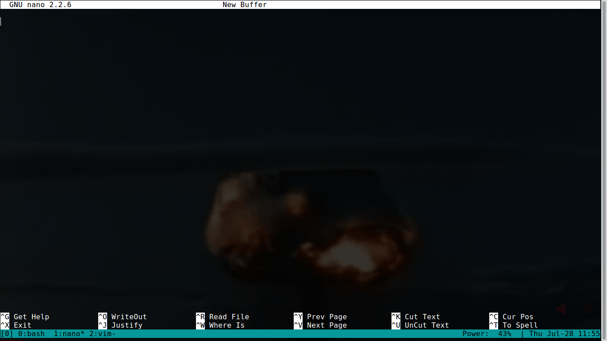
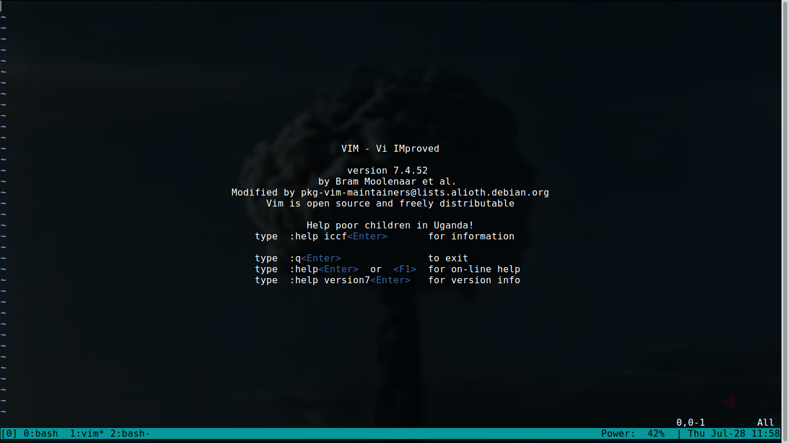
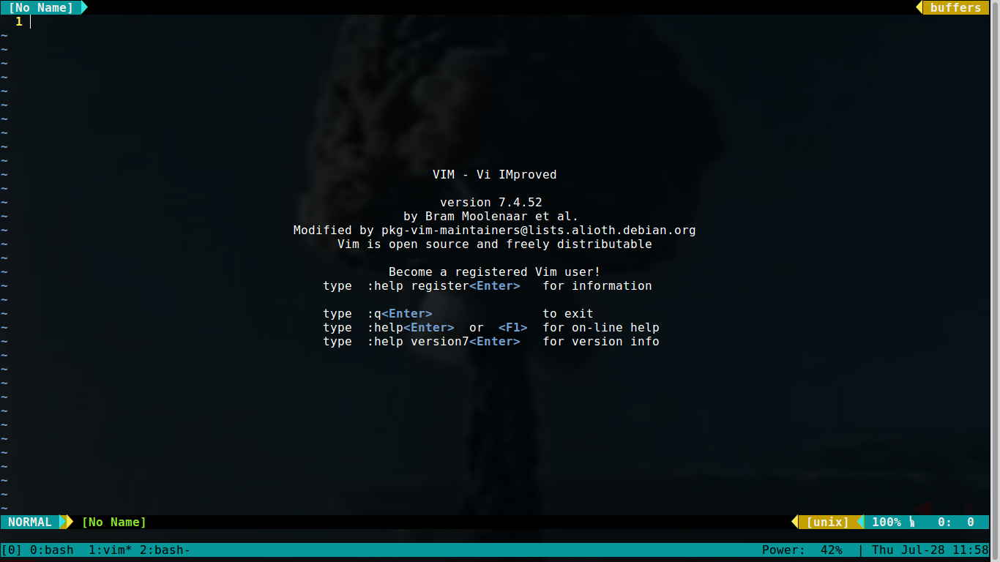

Uma equipe deseja trabalhar em um grande projeto. O que fazer???
Compartilhar os arquivos na nuvem?
Passar os arquivos por pendrive?
Fazer o projeto em reunião com sua equipe?
problemas de colaboração
Linus Torvalds
Um dos criadores do linux
Git
Controlador de versão distribuido
Controle de versão distribuído

Working Directory
Stage Area
.git directory (Repository)
Remote Repository
What is a `Pull Request`?
- performing a `pull request`
- sync the repo:
- `git pull` or `git fetch`
Commands:
git checkout -b nameB
git push origin nameB
git pull origin --all/nameB
git fetch origin
git merge nameB
Say Hello for the `issues` (user stories)
1. creating issues (according to our template):
- Create a list of users;
- Create a list of things;
- Create a list of attributes;
1. Each one chose their issue and accomplish it;
- Presentting our convetions for naming branches and comments in a commit.
1. Create a new Pull Request;
1. Closing issues
meld merge
## Inicializando o git
Inicialize seu projeto
```
$ git init
```
Configure o seu usuário do git
```lisp
$ git config user.name "John Doe"
$ git config user.email johnd@infojr.com.br
```
Conferindo
```lisp
$ git config -l
```